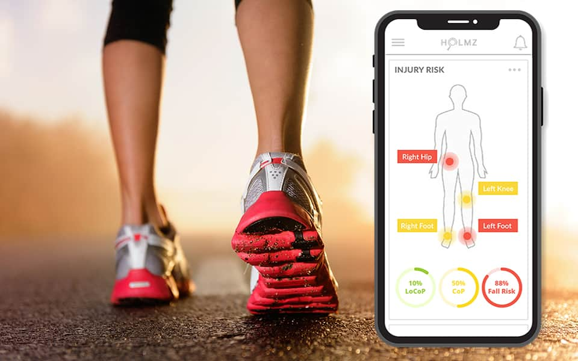
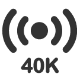
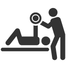
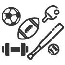
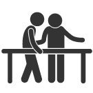
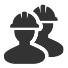
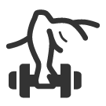
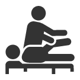

Use Cases
Holmz is able to predict and prevent repetitive stress and overuse musculoskeletal injuries in sports, healthcare, workplace, senior care and military settings.
Holmz helps increase the profitability, productivity, and efficiency of your practice. Holmz collects objective data and identifies changes not possible through visual analysis and clinical visits alone. Clinically complex data is reported with intuitive visualizations and comparisons. Holmz incorporates population health and historical data ot accurately measure change and the effectiveness of treatment.
- 
40,000 sensors monitoring every footstep
Secure cloud patended data analysis

Treatment effectiveness is tracked through data
Recommendations driven from insights
Holmz objectively & accurately assesses the risk of sport injury, guides training & recovery programs, and helps determine when it's safe to return to play. Holmz provides personal coaches / trainers a a reliable visual tool for assessing & evaluating performance and monitoring injury risk.
- 
40,000 sensors monitoring every footstep

Data capturing subtle movements not visible to the eyes
- 
Predicting injury and confirming recovery through data
- 
Help stimulate preferred motion for various sports & athletic training
Holmz predictive capabilities make it the perfect companion for Senior Care professionals, allowing an intuitive glance at multiple patients to monitor injury risk, fall risk, location risk and custom real-time data insights to improve patients safety.
40,000 sensors monitoring every footstep
Real time data insights to predict future injury
Monitoring multiple patient changes in movement to proactively prevent injuries
- 
Implementing personalized rehabilitation & environmental aids
Holmz detailed understanding of how your workforce moves mean you can confidently make decisions to improve productivity, safety, process improvement, office ergonomics and workplace design. Solutions for: Retail, Manufacturing, Real Estate, Utilities, Transportation, Hospitality and Construction.
40,000 sensors monitoring every footstep
- 
Empower Employees to see their own safety status
Review & pinpoint unsafe work practices
Support designing better workplaces
Military service members incur musculoskeletal injuries, including plantar fasciitis at a far higher rate than the civilian population. Holmz is the perfect tool for optimizing service members readiness-to-perform while predicting and preventing the risk of muscular skeletal injury.
40,000 sensors monitoring every footstep
- 
Build custom exercise programs based on assessment results
Quickly highlight abnormal findings & provide treatment suggestions
- 
Guide personalized injury rehabilitation